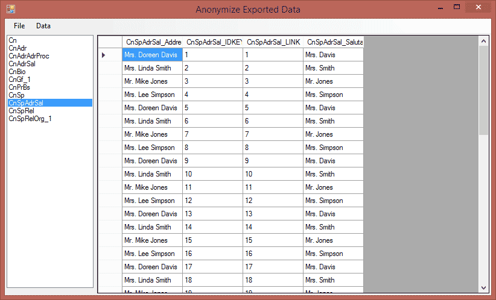
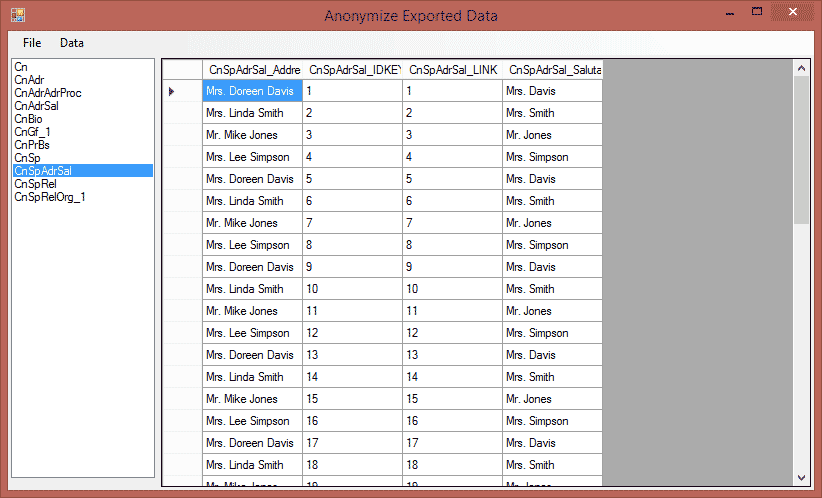

Answers that fit
Your institution. Your needs. Your mission.
What is Highland FRS?
We are a full-service consultancy serving non-profit organizations. We specialize in database optimization to prepare institutions for capital campaigns and lead/assist with data integrity efforts. We offer a variety of services covering the range of institutional needs for advancement and development.
Get in contact!Find out how HFRS can help your organization
 



 View Sean's profile on GitHub
View Sean's profile on GitHub